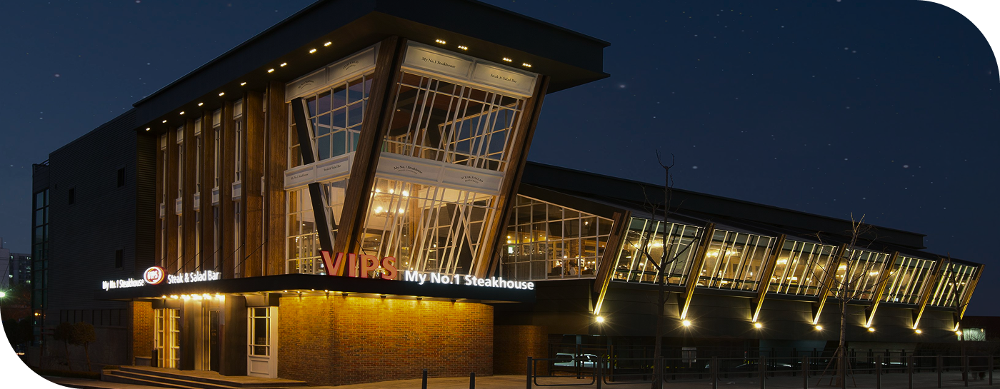
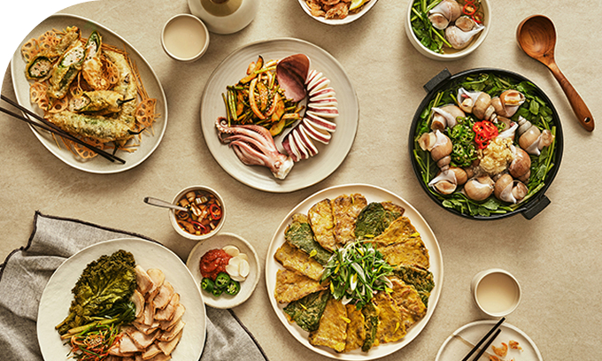
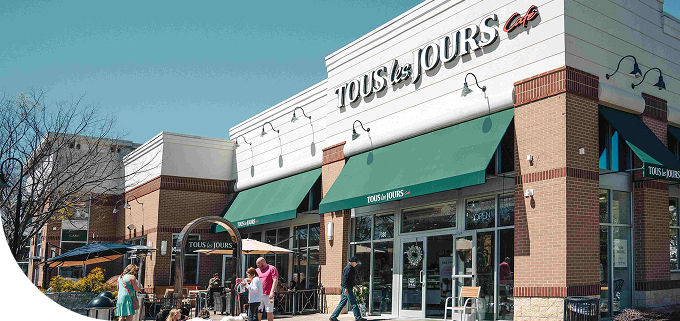
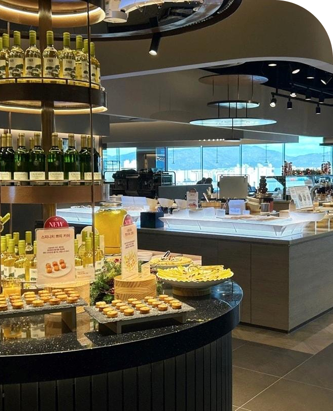
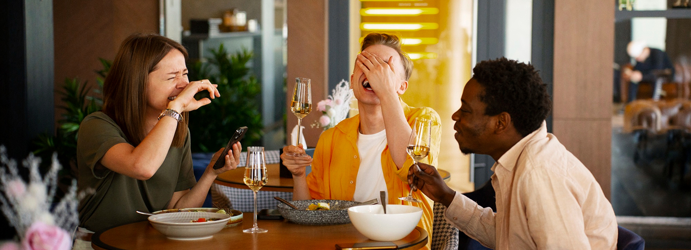

회사소개
회사소개
CJ푸드빌 소개
CJ그룹의 핵심가치인 건강, 즐거움, 편리를 바탕으로
삶의 중요한 순간, 중요한 사람과의 멋진 추억을 만들 수 있는 음식과 장소를 제공하고 있습니다.
-
글로벌 외식문화 기업의 시작을 열다
1994년 패밀리 레스토랑 사업을 시작으로 출발한 CJ푸드빌은 1997년 해외에 로열티를 내지 않는 독자적인 양식 패밀리 레스토랑 빕스(VIPS)를 개발해 론칭에 성공하면서 전문외식업체로서의 기반을 다졌습니다. 이후 2000년 CJ주식회사에서 분리되어 독립하면서 전문외식기업으로 발돋움, 2006년 10월 그룹의 프랜차이즈 사업부문을 통합하면서 탄탄한 종합 외식 서비스 기업으로 탄생하게 됩니다.
CJ푸드빌은 Food(음식)와 Village(마을)의 합성어로 한 마을에 사는 가족과 이웃들이 단란한 식사공간을 통해 행복과 사랑을 나누듯이 편안하고 부담 없이 즐길 수 있는 가족 레스토랑을 지향한다는 의미가 담겨 있습니다.
이것은 CJ푸드빌이 외식공간을 통해 고객님께 가족 이상의 감동 서비스를 전달하고자 하는 강한 의지의 표현이기도 합니다. -
 차별화된 식문화, 다양한 브랜드 통해 선봬
CJ푸드빌은 외식 브랜드와 프랜차이즈 브랜드로 나뉘어 있습니다.

외식브랜드는 프리미엄 스테이크 & 시즈널 샐러드바 빕스를 비롯해
이탈리안 비스트로 더플레이스, 면전문점 제일제면소 등
다양한 외식 브랜드를 운영하고 있습니다.
프랜차이즈 부문은 재료부터 다른 건강한 베이커리 뚜레쥬르를
전국에서 1,300여 개의 매장을 운영 중입니다.
그 밖에 서울의 대표 랜드마크인 N서울타워도 함께 운영 중입니다. 국내를 넘어 세계인의 입맛을 사로잡다CJ푸드빌은 국내뿐 아니라 해외에도 활발하게 진출하며 한국의 외식 사업을 이끌어 가고 있습니다. 뚜레쥬르는 2004년 미국을 시작으로 중국, 베트남, 인도네시아, 캄보디아, 몽골, 캐나다 등에 진출해 있으며, 현지인들의 입맛을 사로잡고 있습니다.
이처럼 CJ푸드빌은 차별화된 외식 브랜드를 성공적으로 론칭함으로써, 국내는 물론 해외에서도 인정받는 글로벌 식문화 기업으로 성장하고 있습니다.
CJ푸드빌은 다수의 해외 매장을 운영하며 글로벌 확장 중입니다. -

고객 삶의 중요한 순간에 함께 합니다
CJ그룹의 핵심가치인 건강, 즐거움, 편리를 바탕으로 삶의 중요한 순간, 중요한 사람과의 멋진 추억을 만들 수 있는 음식과 장소를 제공하고 있습니다.
더불어, 원산지에 대한 믿음, 진심을 담은 맛, 서비스에 대한 약속, 일관된 품질 유지 등 음식을 대하는 기본적인 태도로 한식과 양식 등 정통의 맛을 그대로 재현하고 있습니다.
서울을 대표하는 N서울타워는 Food & Beverage, Entertainment & Media, Health & Beauty 등 생활문화기업인 CJ그룹의 역량이 집결된 공간으로 전세계인의 사랑을 받고 있습니다.
CJ푸드빌 미션·비전
MISSION
ONLYONE적인 맛과 서비스로일상의 즐거움을 창조한다
MISSION
VISION
건강하고 즐거운 식문화를 만드는GLOBAL F&B COMPANY
VISION
CJ의 창업이념에는 사업으로 국가 경제 발전과 국민 생활 증진에 기여한다는 사업보국,
인간을 존중하고 능력을 최대로 발휘할 수 있는 환경을 조성한다는 인재제일,
경영합리화와 기술 혁신을 통해 이익과 번영을 추구한다는 합리추구가 있습니다.
-
- K-FOOD PRIDE
- 우리는 K-Food의 힘을 믿고
K-Food를 통해 세계인의 입맛을 사로잡는다.
-
- FOOD INTEGRITY
- 정직한 맛과 서비스에 대한
우리의 신념을 무엇과도 타협하지 않는다.
-
- OPENNESS
- 우리의 목표를 이루기 위해
열린 생각과 소통을 바탕으로 협업한다.
-
- OUT OF THE BOX THINKING
- 우리는 창의적인 생각을 통해
외식의 Trend를 주도한다.
-
- DEDICATION
- 혼자만의 성공은 의미 없다.
우리는 서로를 통해 성장하고 파트너, 지역사회, 국가와 함께 성장한다.
CI CONCEPT
-
건강
자유롭고 편안한 CJ
보다 부드럽고 세련된, 고객에게 편안함을
느끼게 하는 기업이 되겠다는 것을 나타냅니다. -
즐거움
CJ의 비전을 담은 컬러
건강, 즐거움, 편리를 상징하며 이를 통해 더욱
풍요로워지는 고객의 생활문화를 상징합니다. -
편리
Blossoming CJ
세계시장과 고객을 향해 만개하는 꽃처럼
새롭게 피어나는 CJ를 상징합니다..
CJ 푸드빌 국문 CI
CJ 푸드빌 영문 CI